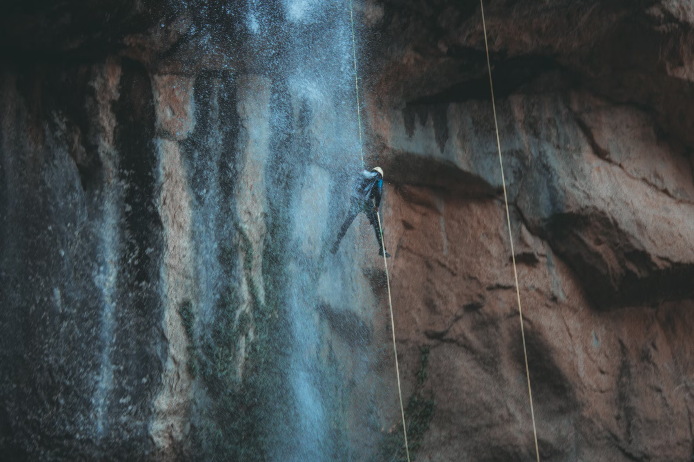
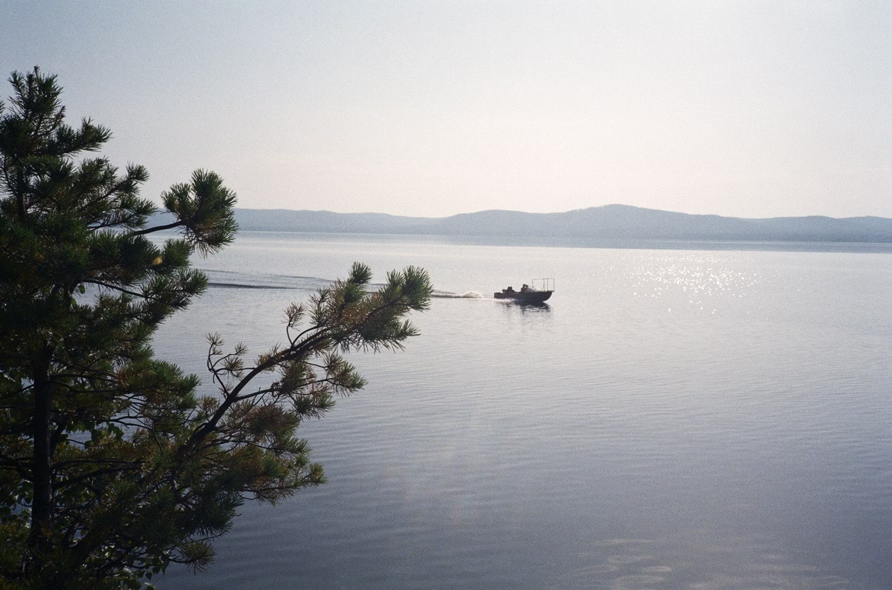
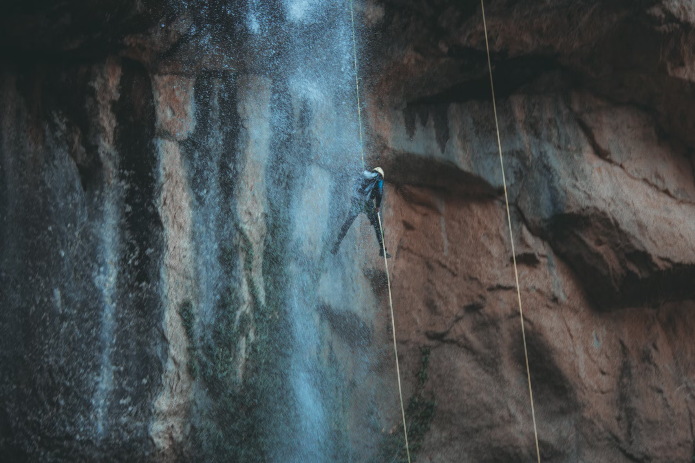
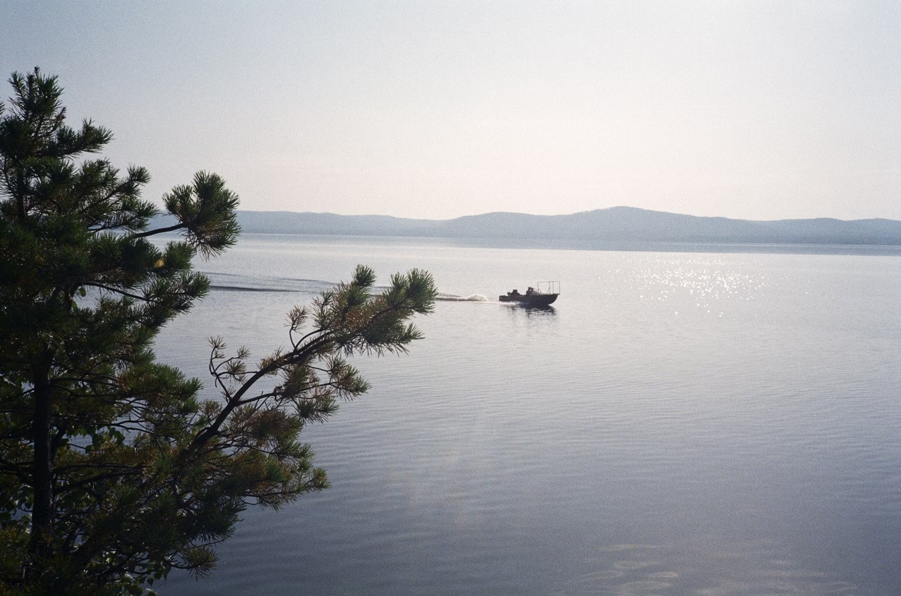

Lochquarry is an Outdoor Centre, which offers outdoor Land based, water based and Rope based activities


 



Site Information Lochquarry Outdoor Centre is set in acres of land in the heart of the majestic Argyll hills. On our doorstep is not only magnificent scenery, but also a breath-taking selection of outdoor and adventurous activities. With activities designed to meet the needs of all ages and experiences of young people, Lochquarry truly brings adventure to everyone. Each activity is run under the instruction of one of our highly trained staff and all safety equipment is provided. The Centre Manager is responsible for: The overall running of the centre and all of its activities Favourite Activity: Pole climb. Senior Instructor (Land) Responsible for: Overseeing all of the land based activities Favourite Activity: Hillwalking in the beautiful Scottish highlands The Centre Administrator is responsible for: Making bookings and arranging activity slots for groups Favourite Activity: Making sure everyone has a great time when the visit
Customer Comments ‘We had a great time and loved all the different activities that we did’ − 8th Gourock Guides ‘The Scouts loved every second of it, especially the powerboating’ − Martin Bainbridge, Scout Leader ‘I would definitely come back’ − Kelly, aged 9 ‘Thank you to all the staff who worked so hard, in awful weather, to make sure that all the pupils had an amazing experience’ − Mrs Kahn, Hillend Primary School
Activities on offer at Lochquarry include: